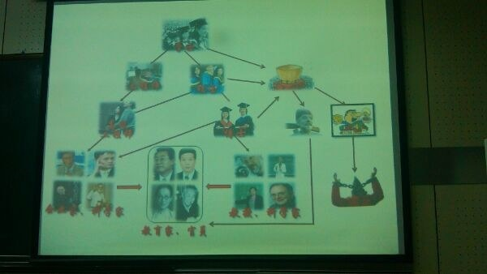

<p><html><head><style type="text/css">table {border-width: 0px;border-spacing: 0px;border-style: none;border-color: navy;border-collapse: collapse;background-color: white;}th, td {border-width: 1px;padding: 3px;border-style: inset;border-color: black;background-color: white;}</style>
</head><body></p>

<h1>Jianzhong Lee</h1>

<ul>
<li><p></p></li>
<li><p></p></li>
</ul>

<div>
  <table>
    <tr><th>可计算否</th><th>可计算理论</th></tr>
    <tr><th>能行可计算</th><th>计算复杂性理论</th></tr>
    <tr><th>计算与分析算法</th><th>算法设计与分析</th></tr>
    <tr><th>用计算机语言实现算法</th><th>数据结构与程序设计</th></tr>
    <tr><th>软件系统</th><th>编译 OS</th></tr>
    <tr><th>计算机硬件系统</th><th>计算机系统结构 数字电路</th></tr>
  </table>
</div>

<p></body></html></p>
